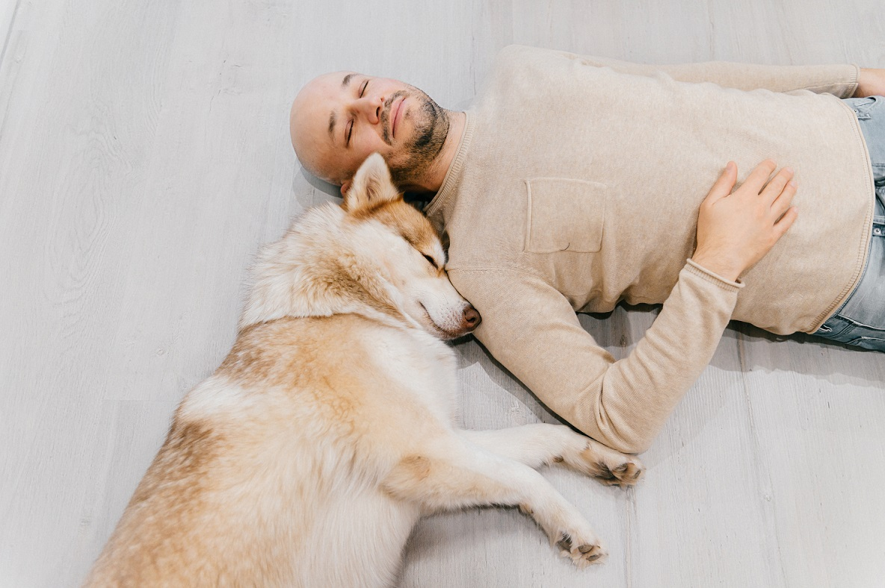
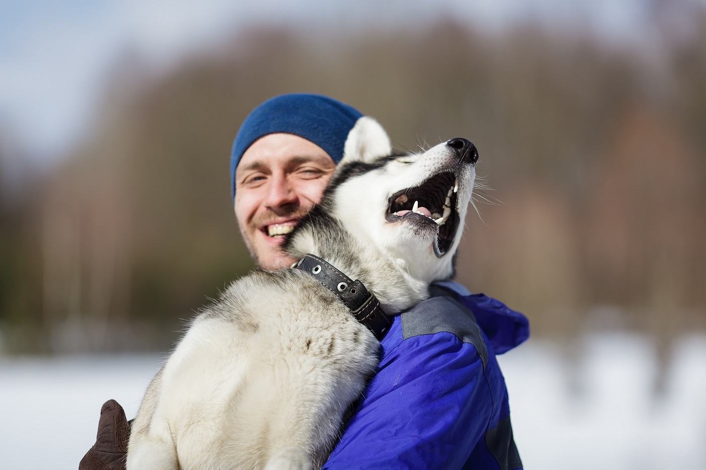

CONTACT US
-
2225 East Bayshore Road, Suite 200
Palo Alto, CA 94303
(877) 738-1838
877-PET1VET

Face it. You love animals. Come on, don't be shy. Whether it's being nuzzled by a cute, wet nose or caught off guard by a furry feline brushing up against your leg and purring madly all the while, pets offer that special and undeniable form of unconditional love and affection that no other creature can provide.
You feel better around them. You are more relaxed, at peace, and able to more easily disconnect from your stressful life circumstances when they eagerly greet you at the door after a tough day at the office. Well, good news! There's scientific proof, backed by 25 years of rock-solid research, that pet ownership provides an unusually high number of real and lasting health benefits!
Below you will find 10 of the best reasons ever to keep Fido or Fifi around as long as possible:
1. Pet owners are less lonelyWe’ve known for quite some time that those who have less contact with the outside world suffer more from a host of chronic mental and physical illnesses. Take heart! A study published in Aging & Mental Health shows that older adult pet owners are far less lonely and tend to be less affected by its impact on health and well-being.
2. Pets can bulletproof you against social rejectionA study in the journal Anthrozoos definitely declares that thinking about and looking at pictures of pets while recalling a past negative experience felt less agitated and deflated than those who thought about or looked at pictures of people. Apparently, negativity is no match against a four-legged family member!
3. Pets are effective roadblocks against stressLet’s get very serious. More illness and death is attributable to the effects of stress on our lives than any other cause known to man. And this is exactly why you need a pet. A Swedish study found that spending as little as 15 minutes a day with a loving animal lowers cortisol (the stress hormone) levels in the body. So next time you feel your blood pressure rising, skip the stiff drink, forego the fast food, and dole out a good amount of belly rubs to that hairy hunk of joy rolling around on the throw rug!
4. Pets keep your head (and your thinking) screwed on straight
A beautiful study, outlined in the journal Frontiers in Psychology, demonstrates that the elderly, and especially those who had trouble getting out of the house on a regular basis, but who owned cats or dogs, had much better memories than those who did not own a pet under the same circumstances. Sounds like a great opportunity to cuddle up with the pooch or kitty and watch Cats and Dogs on Netflix!
 5. Pets are great for your heartA study in the Journal of Vascular and Interventional Neurology indicates that dog and cat owners tend to experience fewer and less deadly heart attacks. It seems that our canine and feline companions help us relax when stressed, and, as pointed out above, stress kills. It therefore seems rather logical that owning a pet is like owning a treasure “chest!”
6. Pets make fabulous exercise partnersMany people need outside motivation to work out, and may depend on an exercise buddy to get them off the couch. What happens when your exercise partner gets stuck at work or stuck in traffic or has another commitment? Your dog is only committed to one thing… you! That makes her the perfect exercise partner. She's always available and willing to accompany you on a walk. A study from Michigan State University proves my point, and lets us know that pet owners exercise a half an hour more each day than those who live without the “wet nose of love.”
7. Pet owners and their children typically suffer from fewer allergiesIt may sound rather counterintuitive, but according to a study in Clinical & Experimental Allergy, your youngster will likely grow up with fewer allergies if you have a hairy hound around the homestead while he or she is still young. Keep in mind, however, that this only really works when Huckleberry is brought on board early in the child’s life, and adults cannot expect similar results.
8. Pet owners deal better with pain and have less of itSpending time with your canine companion might help keep you out of the medicine cabinet and away from the Aleve. Studies show that adults who spent time cozying up with a dog after back or hip surgery used less medication than those who didn’t have animal-assisted therapy.
9. Pets can help fight cancer and other nasty life-threatening disordersThe British Medical Journal reports that dogs can detect early stage bowel cancer using their highly specialized sense of smell! Other research seems to indicate that they can also zero in on other forms of cancer as well, such as bladder, skin, lung, breast, and ovarian cancers. I would say, for this reason alone, and given the prevalence of these conditions in today’s society, that we all need to adopt a pet as soon as possible!
10. Dogs simply make a person feel more lovingThe journal Science reports that staring into your mutt’s eyes for even just a few seconds produces demonstrable increases in the production of oxytocin. Are you listening? Oxytocin is one of the most beneficial hormones known to man. It’s the “feel good” chemical that imbues husbands and wives, parents and children, teachers and students, and (are sitting down?) bosses and employees with a feeling for each other that says “this person has my best interests in mind; I think I will let them stick around.” |
Okay, so we’ve made our point. You need to go get a pet. And if you have one already, great! Take him or her for a walk, scratch his head, rub his belly, or run your fingers over and through his or her fur. Go to the park and throw a ball with him, and watch as both he and you get deliriously happy about the simplest things imaginable. There is hardly a greater joy known to man (other than chocolate) that can so easily satisfy one’s need for calm and comfort. Most of all, if you already own a dog, remember to be grateful.
Also, please keep in mind that pet ownership comes with responsibility, so research if pet insurance is the right way to finance your dog's veterinary care, and check out our top 10 pet insurance companies ratings. We hope you enjoyed what we’ve had to say, and encourage you to visit our link for more information on this important and compelling topic!
>> Top 10 Pet Insurance Companies
>> Best Pet Insurance for Golden Retriever
(877) 738-1838
877-PET1VET